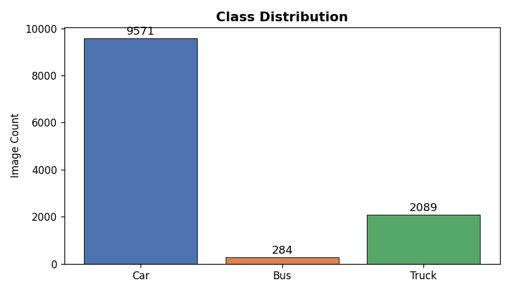
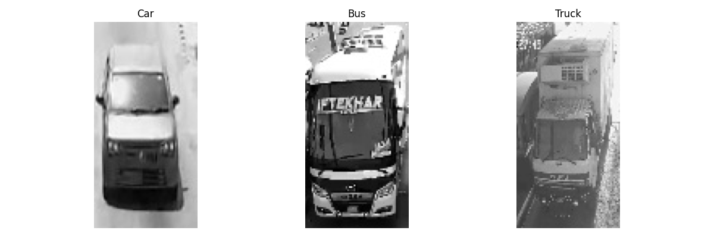
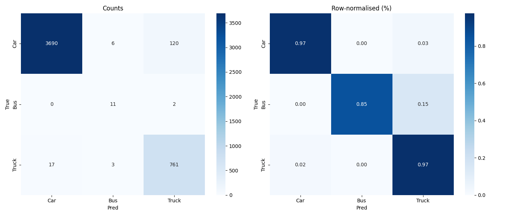

A Robust Computer Vision Pipeline for Real-Time Highway Auditing
Engineered by Team BOur pipeline targets structural taxonomy. We isolated top-down toll plaza images into three specific commercial classes: Car (f1), Bus (f4), and Truck (f5). To standardize inputs for classical CV, every ROI is converted to a grayscale 64x128 matrix.

Raw pixels fail under variable highway lighting. We calculate first-order finite difference approximations to isolate pure structural geometry, generating a 3,780-length feature vector per vehicle.
Horizontal Gradient (Edge Detection):
$$G_x(x,y) = I(x+1, y) - I(x-1, y)$$L2-Hys Block Normalization:
$$\mathbf{v}_{\text{norm}} = \frac{\mathbf{v}}{\sqrt{||\mathbf{v}||^2 + \epsilon}}$$# src/02_hog_extraction.py
def build_hog():
return cv2.HOGDescriptor(
_winSize=(64, 128),
_blockSize=(16, 16),
_blockStride=(8, 8),
_cellSize=(8, 8),
_nbins=9
)
High-dimensional HOG arrays are normalized via StandardScaler and classified using a Support Vector Machine. To combat the severe class imbalance (Cars vs. Heavy Vehicles), we implemented inverse frequency class weighting.
Optimization Objective (Max Margin):
$$\min_{\mathbf{w}, b} \frac{1}{2} ||\mathbf{w}||^2 \quad \text{s.t.} \quad y_i(\mathbf{w} \cdot \mathbf{x}_i + b) \geq 1$$# src/03_train_svm.py
clf = LinearSVC(
C=1.0,
class_weight='balanced', # Crucial for 33:1 imbalance
max_iter=5000,
random_state=42
)
clf.fit(X_train_sc, y_train)During inference, our 07_cross_modal_verifier.py runs a softmax over the SVM's decision boundaries. If the visual prediction contradicts the declared RFID FASTag class, a Fraud Score is generated. Evaluated against 1,510 strictly unseen test images, the model proved highly effective at catching heavy vehicle fraud.
